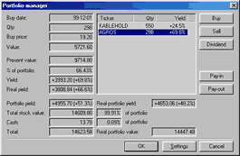

Portfolio management window
NOTE: This document describes functionality that is PHASED OUT and replaced
in version 4.90 by superior Account Manager.

This window lets you manage your portfolio of symbols. You can perform purchase
and sell operations and the program will calculate commissions for you.
The following items are in the portfolio management window:
- portfolio symbol list
- text fields containing date, quantity, buy price, current price, value,
yield, and ‘real’ yield (this is yield minus commission)
- total security value
- cash remaining
- total portfolio value
The following actions can be taken:
- Buy securities
you will be asked to confirm symbol selection and price and then you
will be asked for a number of shares you want to buy
- Sell securities
as before except that you have to choose the symbol from the portfolio
symbol list.
- Dividend
after selecting that control you will be asked for dividend value per share.
The program will calculate total dividend value minus income tax.
- Deposit
after pressing this button you will be asked for the amount of cash you want
to deposit.
- Withdraw
after pressing this button you will be asked for the amount of cash you want
to withdraw
The commissions taken by all buy/sell transactions are definable in Settings
(Commission) window.